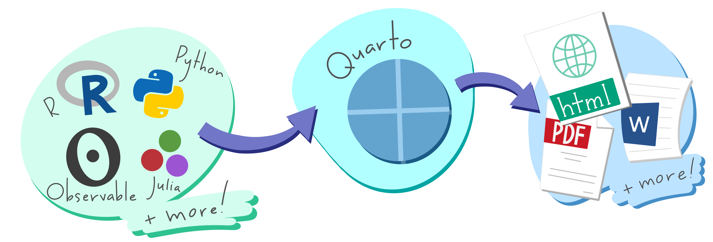
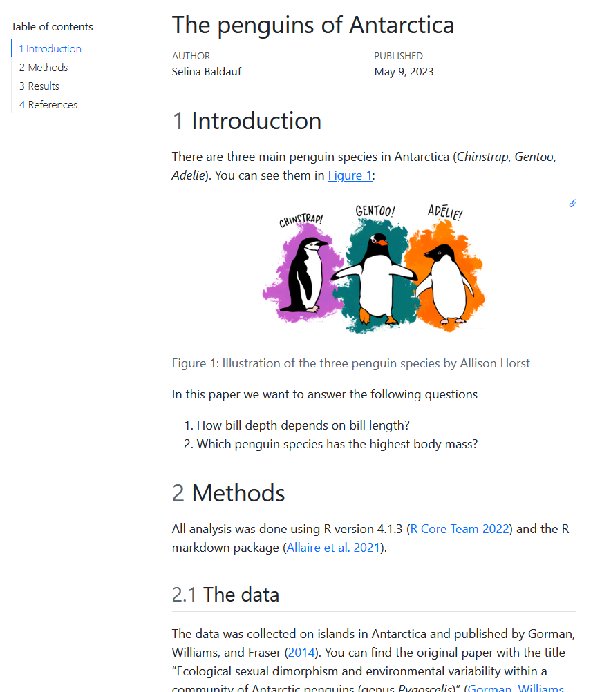
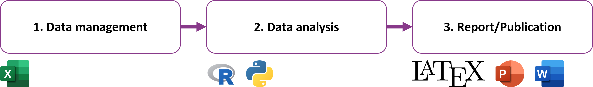
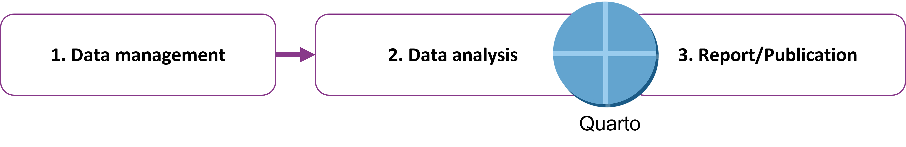
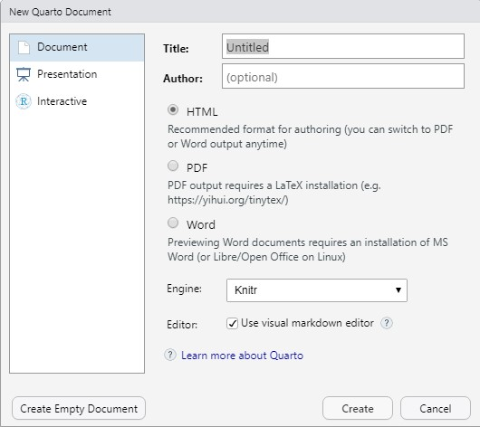
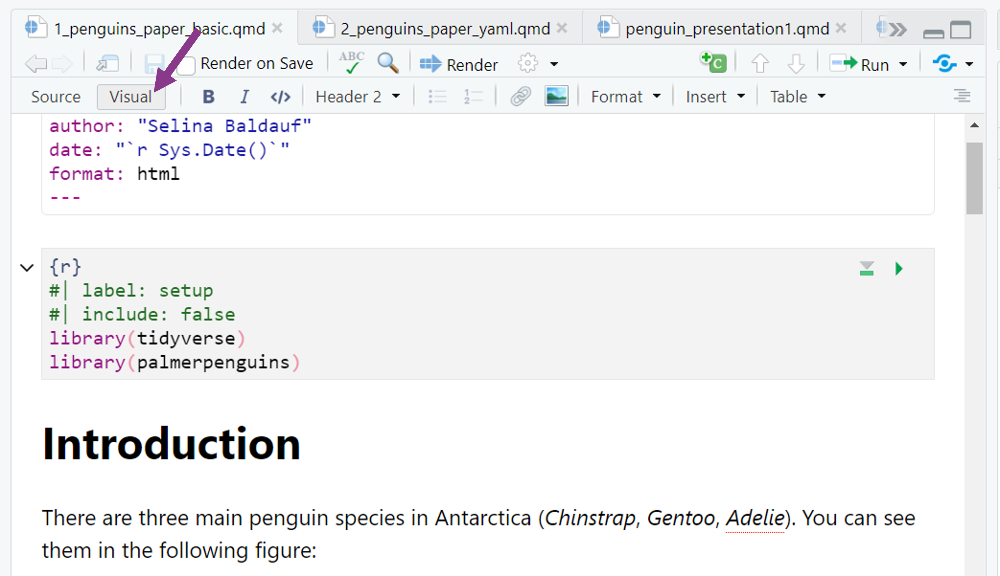
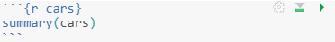

Scientific workflows: Tools and Tips 🛠️
2023-05-11
📅 Every 3rd Thursday 🕓 4-5 p.m. 📍 Webex
Quarto is an open-source scientific and technical publishing system
Basic idea: Create documents with dynamic content and text

Document types that can be created with Quarto (examples):
Quarto is a huge topic and there are so many cool Quarto things!
Goal of today: Introduction to Quarto and an overview of different document types and their possibilities.
Different options, depending on your workflow:
Help -> Check for Updates)Check out the Quarto website for download and more info.
Reproducible documents for data analysis
An HTML example


Problem: Manual updates are error prone and non-reproducible
Solution: Use a Quarto workflow everything (code, text, metadata) in one place. Let Quarto do the magic

Advantages of this workflow:
Download a quarto demo project from Github
.qmd documentOpen R Studio and go to File -> New File -> Quarto Document

Just click Create and the file will open in R Studio.
In other environments you can just create and empty file with .qmd ending
.qmd documentQuartoRender button in R StudioCtrl + Shift + Kquarto::quarto_render() functionquarto render doc.qmd.qmd documentText body, Code, YAML header
Markdown is a simple markup language to create formatted text, you can e.g.
Make italic text with *text* or bold text with **text**
Generate headers of different levels
You can also do more complex things like:
If you don’t want to use markdown, there is a really nice feature in R Studio: The visual editor.
Convenient, word-like interface for formatting text and adding features.

Using the visual editor, makes many things that would be painful in Markdown really easy.
My favorite feature in the visual editor:
Insert -> Citation) from Zotero library, DOI search, PubMed, …Code can be included in code chunks or as inline code
Inline code starts and ends with 1 backtick
`r `Code chunks starts and ends with 3 backticks
```{r}
library(ggplot2)
ggplot(airquality, aes(Temp, Ozone)) +
geom_point() +
geom_smooth(method = "loess")
```Insert a code chunk (R Studio)
Code -> Insert chunkCtrl + Alt + I / Cmd + Option + I</> symbol in visual modeRun code chunk

Code chunk have special comments that start with #| and that control the behaviour of the chunk.
```{r}
#| label: fig-airquality
#| fig-cap: Temperature and ozone level.
#| include: false
library(ggplot2)
ggplot(airquality, aes(Temp, Ozone)) +
geom_point() +
geom_smooth(method = "loess")
```label: Figure and chunk label that can be referred to in textfig-cap: Figure captioninclude: Include the output (i.e. the plot) in the document but don’t show the codeFor document output formats
For document options
Execute options
Use cases for scientists
qmd instead of .R scripts to add text to the code (e.g. for interpretation or method description)Quarto offers many more things like:
Git is an essential skill if you use any programming language. It allows you to keep track of changes over time, collaborate with others, and maintain a clear and organized file structure. This can save time, improve research efficiency, and makes it easy to publish your code.
. . .
📅 15th June 🕓 4-5 p.m. 📍 Webex
🔔 Subscribe to the mailing list
📧 For topic suggestions and/or feedback send me an email
Questions?
Selina Baldauf // Quarto